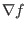
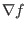

Next, we discuss the gauge transformation of the vector potential
in the axisymmetric case. It is well-known that magnetic field remains the
same under the following gauge transformation:
where  is an arbitrary scalar field. Here we require that  be
axisymmetric because, as mentioned above, an axisymmetric vector potential
suffices for describing an axisymmetric magnetic field. Note that, in
cylindrical coordinates, is given by
is an arbitrary scalar field. Here we require that  be
axisymmetric because, as mentioned above, an axisymmetric vector potential
suffices for describing an axisymmetric magnetic field. Note that, in
cylindrical coordinates, is given by
Since is axisymmetric, it follows that
,
, and
, which implies that
is independent of  ,
,  , and
, and  , i.e.,
is actually a constant. Using this, the component of
the gauge transformation (9) is written
, i.e.,
is actually a constant. Using this, the component of
the gauge transformation (9) is written
|
 |
|
|
| |
|
|
(11) |
where is a constant. Note that the requirement of axial symmetry greatly
reduces the degree of freedom of the gauge transformation for  (and
thus for
, i..e,
(and
thus for
, i..e,  ). Multiplying Eq. (11) with
, we obtain the corresponding gauge transformation for ,
). Multiplying Eq. (11) with
, we obtain the corresponding gauge transformation for ,
which indicates has the same gauge transformation as the familiar
electric potential, i.e., adding a constant. (Note that the definition
does not mean
because
can have a dependence under the gauge transformation
(11)).
yj
2018-03-09